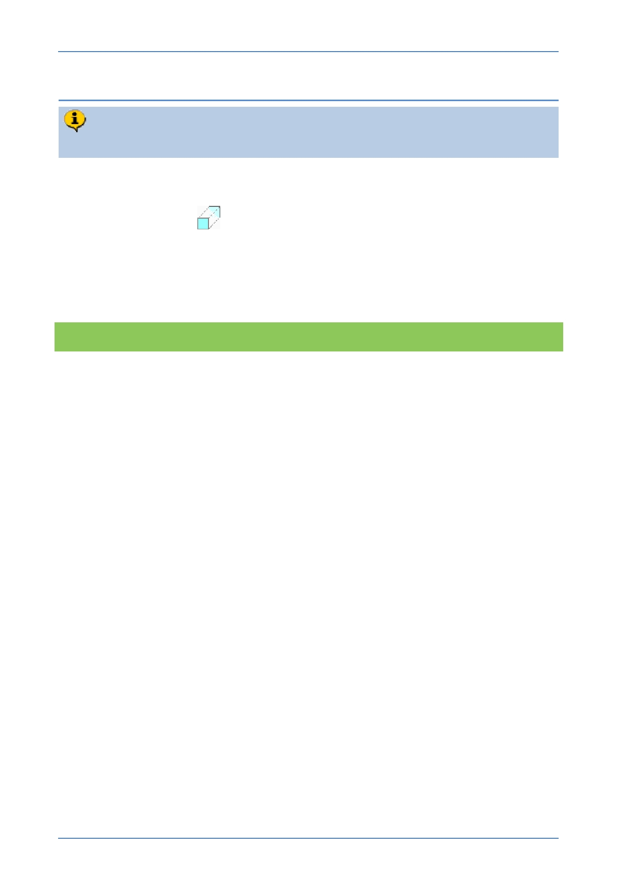

PTC Academic Program
Step 2: Start an Extrude
You will start an Extrude choosing datum plane RIGHT as the sketch plane.
1. Starting an Extrude feature and defining the sketch plane :
Start the Extrude
tool from the Shapes group.
In the model tree or graphics area, select datum plane RIGHT .
The Sketch tab will open and you will be able to start sketching. Notice the two
“Reference” lines will be visible linked to datum planes FRONT and TOP
What have you learned?
Starting an extrude feature.
Selecting a sketch plane.
Ribbon menu workflow.
© 2012 PTC
Creo Parametric 2.0 Primer
Page 47